Every screen a Pulse (Trends) row or a Night (Sleep) row opens, restyled to the same idiom as the tabs: the colour field behind, glass cards, secondary text at the brighter token, one number with one comparison, every related item a door. Real build, iPhone 17 Pro simulator, demo data. The Liquid and Classic layouts keep the previous screens; this applies when the layout is Halo.
Metric page (HRV, resting HR, sleep, breathing, every Sleep contributor): the scenic vessel hero becomes one big number with the day it belongs to and a single comparison against the 30-day average, the same window the tab rows use. Range control, one chart card, a readout strip with a labelled "vs prev", and "Moves with" as rows you can open. Correlations are captioned as patterns observed, not causes. The metric lab is one row away.
Week in review, Charge calendar, Stages, Sleep debt, Log, 30 nights: one shared page wrapper (Charge field for Trends, Rest field for Sleep) with the existing cards rendered as glass on it, so a tap from the tab lands somewhere that looks like where it came from.
Metric page (HRV)
Before
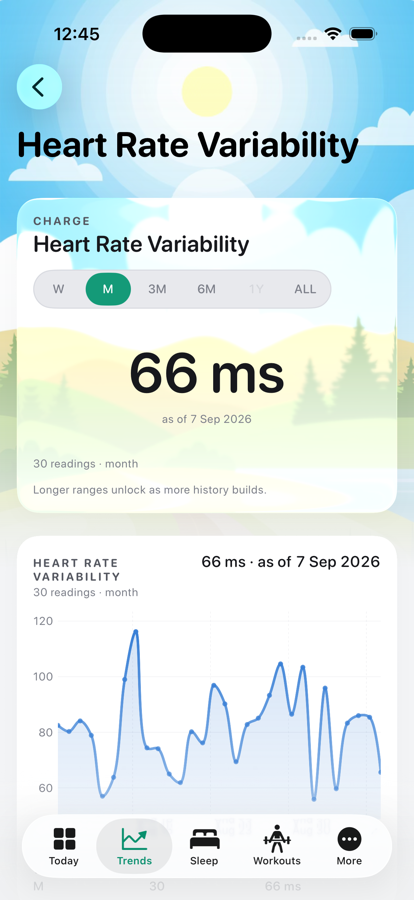
Scenic hero, vessel gauge, category card
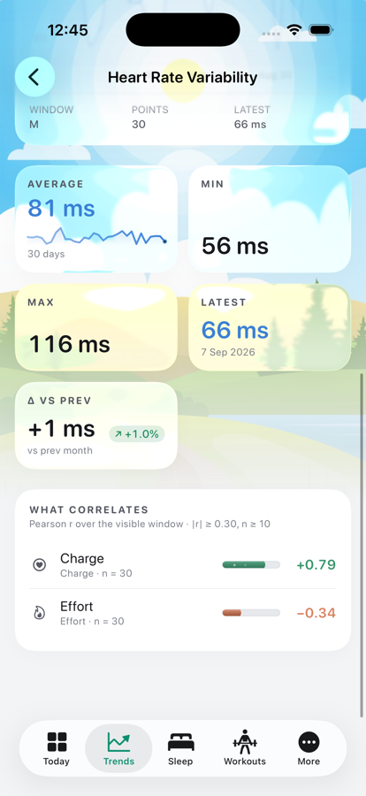
Five stat tiles, correlation list
After
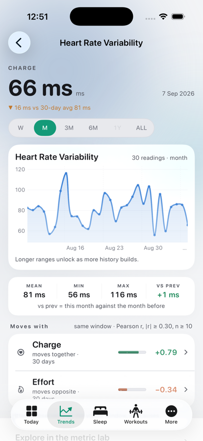
Number, day, vs 30-day avg, range, chart, readouts
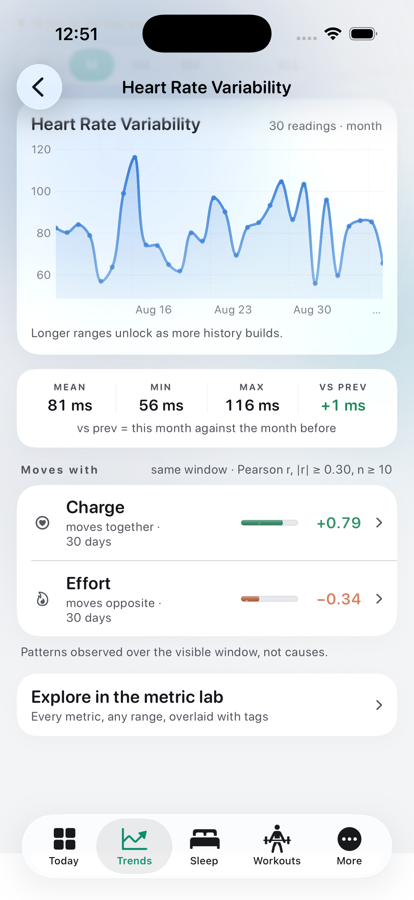
Moves with (rows open the metric), lab link
Sleep contributor (Asleep time)
Before
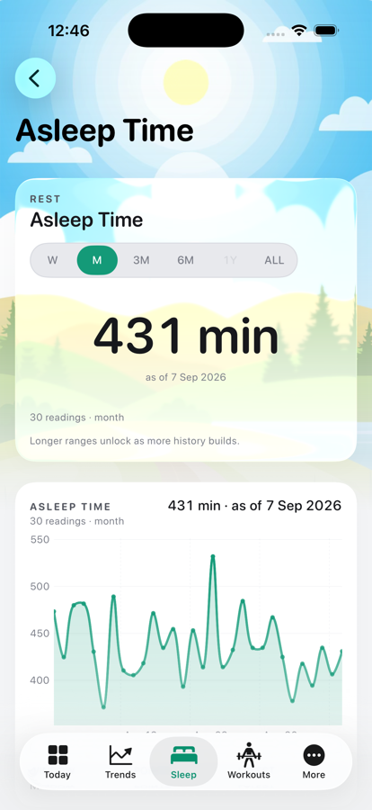
After
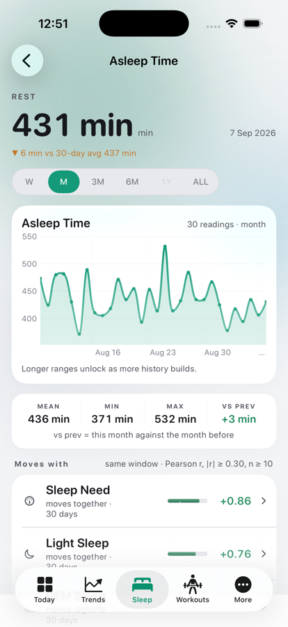
Same page as Trends metrics, Rest tint
Week in review
Before
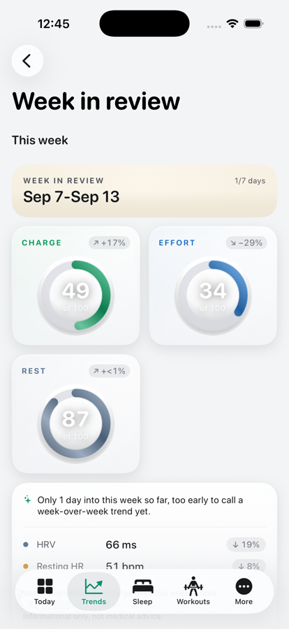
After
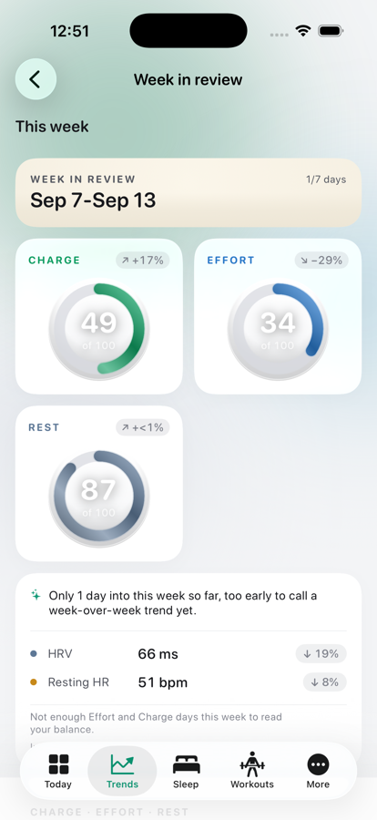
Charge field, glass cards, same content
Charge calendar
Before
Plain surface, opaque card (same card as the old tab).
After
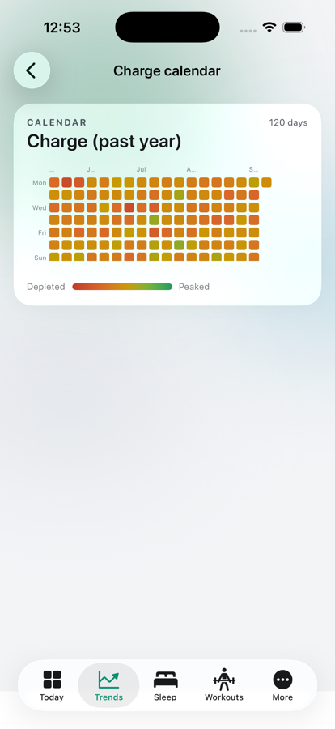
Stages
Before
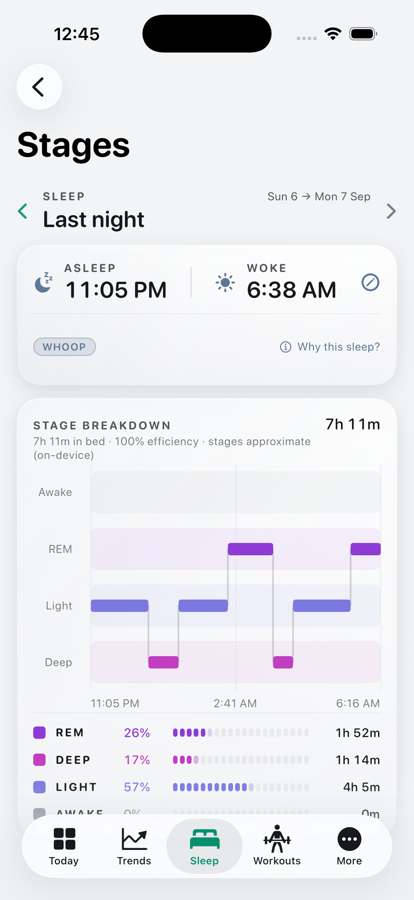
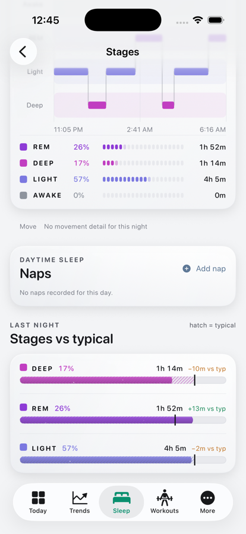
After
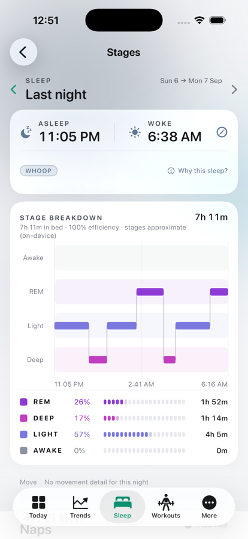
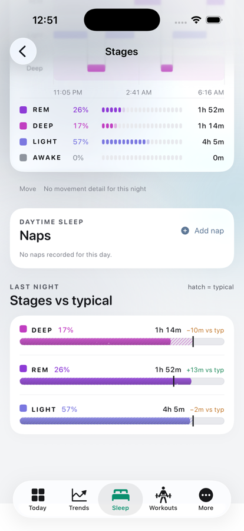
Sleep debt · Log · 30 nights
Before
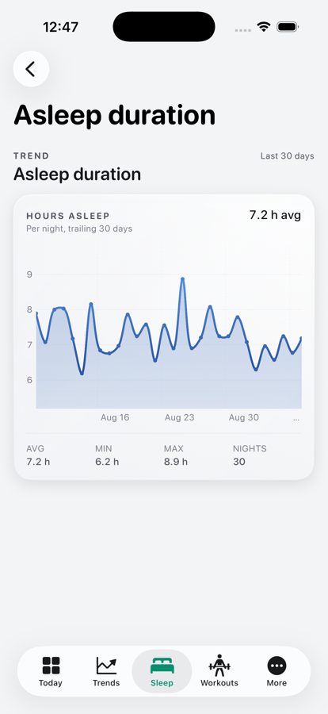
30 nights (debt and Log pages had the same plain surface)